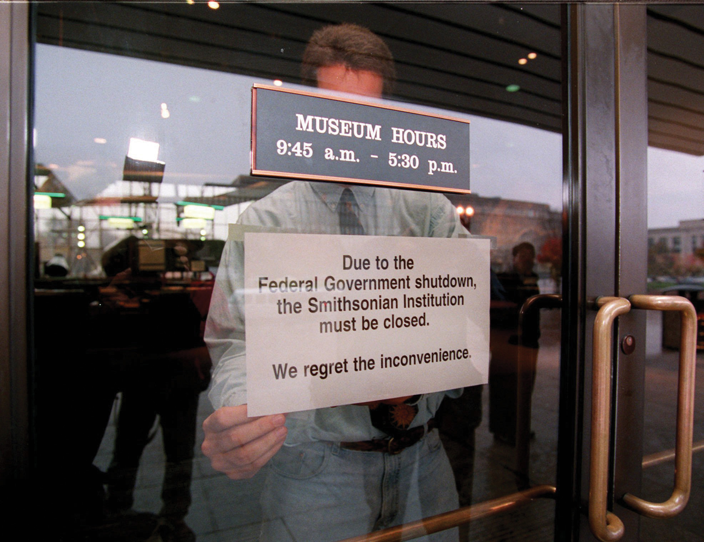

On August 28, 2005, Hurricane Katrina inflicted widespread devastation on New Orleans and the Gulf Coast.
Devastation Wrought by Hurricane Katrina
Source: Photo courtesy of the Federal Emergency Management Agency, http://commons.wikimedia.org/wiki/File:Hurricane_katrina_damage_gulfport_mississippi.jpg.
Reporters from the networks and cable channels rushed to chronicle the catastrophe. They emotionally expressed their horror on camera and in print at the woefully tardy and inadequate response to the disaster by the government’s Federal Emergency Management Agency (FEMA). The head of FEMA confessing on television that he had only learned belatedly that thousands were stranded at the New Orleans’ convention center without food or water symbolized this incompetence. Through the media and the Internet, Americans and people throughout the world witnessed an inept federal agency and learned that it was led not by a disaster expert but by a political appointee whose previous employer was the International Arabian Horse Association.
FEMA is just one of over two thousand executive agenciesOrganizations within the federal executive branch designed to apply the law.—governmental organizations in the executive branch that are authorized and designed to apply the law. Collectively these agencies make up the federal bureaucracyThat part of the executive branch outside the presidency that carries out laws and regulations.. The bureaucracy consists of career civil servants and of political appointees. Most of these bureaucrats competently carry out their duties largely unnoticed by the media. Few reporters cover agencies on a regular basis. Agencies sometimes get into the news on their own terms; all of them employ public relations experts to crank out press releases and other forms of mass communication containing information on their programs and to respond to reporters’ requests for facts and information. But the media often portray the bureaucracy negatively as a haven of incompetence and, as with their coverage of FEMA and Hurricane Katrina, are quick to chase after stories about bungling, blundering bureaucrats.
After reading this section, you should be able to answer the following questions:
The influential early-twentieth-century sociologist Max Weber suggested that bureaucracy is an efficient way to govern large, complex societies. For Weber, the ideal form of bureaucracyAn organization marked by hierarchical division of labor, internal specialization, and adherence to fixed rules. has four characteristics:
Such a depiction of bureaucratic organization and effectiveness is rarely found in the news. When the media consider bureaucracy, it is most often to excoriate it. One scholar examined a recent year’s worth of newspaper editorials and concluded, “Mismanagement, wasteful spending, ethical lapses, and just plain incompetence stimulated editorial responses regularly.…By contrast, editors rarely devoted much space to agencies’ success.”Jan P. Vermeer, The View from the States: National Politics in Local Newspaper Editorials (Lanham, MD: Rowman & Littlefield, 2002), 93–94. Likewise, television news zeroes in on waste, fraud, and abuse. Reporters provide new episodes of recurring segments such as ABC’s “Your Money” and NBC’s “The Fleecing of America.” The federal bureaucracy is a favorite target.
This frame finds government bureaucracies rife with incompetence and bureaucrats squandering public funds. The millions of dollars misspent are drops in the bucket of a federal budget that is more than a trillion dollars; but bureaucratic inefficiency, if not ineptitude, seems to be the rule, not the exception.
Such stories are easy for journalists to gather—from investigations by the Government Accountability Office of Congress, from congressional hearings, and from each agency’s inspector general. Thus the media widely covered the damning reports of the inspector general of the Securities and Exchange Commission on the reasons for the agency’s failure, despite many warnings and complaints from credible sources, to investigate Bernard Madoff’s $65 billion Ponzi scheme.Zachery Kouwe, “In Harsh Reports on S.E.C.’s Fraud Failures, a Watchdog Urges Sweeping Changes,” New York Times, September 30, 2009, B10.
Entertainment media depictions of bureaucracy are often negative. The movie The Right Stuff (1983), based on Tom Wolfe’s best-selling history, eulogizes an era of test pilots’ daring individualism. Test pilot Chuck Yeager bravely and anonymously breaks the sound barrier and then returns to the fraternity of fellow pilots in a tavern whose walls are covered with pictures of gallant men lost in the quest. But when the Soviet Union launches the Sputnik satellite in 1957, panic-stricken Washington sends buffoonish bureaucrats to recruit test pilots—excluding Yeager—into a stage-managed bureaucracy for the astronauts chosen to go into space.
The entertainment media do sometimes show bureaucracy as collectively effective and adaptable. Apollo 13 (1995) portrays NASA and its astronauts as bureaucratic and heroic. After a blown-out oxygen tank aboard the space capsule threatens the lives of three astronauts, the NASA staff works to bring them back to Earth. The solution to get the astronauts home is clearly an ingenious collective one thought up by the various NASA workers together.
Bureaucracy is the problem in The Right Stuff and the solution in Apollo 13. The Right Stuff tanked at the box office. Apollo 13 cleaned up, probably because of its reassuring story, tribute to the astronauts’ gallantry (it is hard to view astronauts as bureaucrats), and happy ending.
We will show that the federal bureaucracy is far more complex than the media allow. Then, at the end of the chapter, we will discuss the bureaucracy in the information age.
The federal bureaucracy is not explicitly laid out in the Constitution. It was never instituted and planned; it evolved by the gradual accretion of agencies and tasks over time.
When Thomas Jefferson became president in 1801, the administrative civilian workers employed by the federal government—the civil serviceThe administrative civilian workforce employed by the federal government.—numbered under three thousand. One-third of them were part-time employees. Nine-tenths worked outside Washington, DC.Paul P. Van Riper, History of the United States Civil Service (Evanston, IL: Row, Peterson and Company, 1958), 19.
When political parties developed, so did the practice of rewarding friends and allies with jobs and grants. It was also a democratic reaction to an era when the bureaucracy was run by aristocrats. Andrew Jackson made political patronageThe distribution of governmental jobs and grants to members and allies of the political party in power. a matter of principle when he became president in 1829. He wanted to make sure that federal workers were accountable to the executive branch—and to him as president.Matthew A. Crenson, The Federal Machine: Beginnings of Bureaucracy in Jacksonian America (Baltimore: Johns Hopkins University Press, 1975); Daniel P. Carpenter, The Forging of Bureaucratic Autonomy: Reputations, Networks, and Policy Innovation in Executive Agencies, 1862–1928 (Princeton, NJ: Princeton University Press, 2001), chap. 2. His ally, Senator William Marcy cried, “To the victors belong the spoils!” And Jackson’s detractors coined the term the spoils systemThe term given by its detractors to the practice started by President Andrew Jackson in 1829 of a new president replacing all civil servants with party faithful.: when the party in power changed, there was a full-scale replacement of officials by party faithful—who donated some of their salary to party coffers.
After the Civil War, the federal government grew enormously. Presidents and legislators were overwhelmed with finding jobs for party members. Representative James Garfield griped in 1870, “[O]ne-third of the working hours of senators and representatives is hardly sufficient to meet the demands made upon them in reference to appointments of office.”Ronald N. Johnson and Gary D. Libecap, The Federal Civil Service System and the Problem of Bureaucracy: The Economics and Politics of Institutional Change (Chicago: University of Chicago Press, 1994), 18. Garfield was elected president ten years later, during which time the federal government workforce almost doubled (from 51,020 in 1870 to 100,020 in 1880). As president, Garfield was besieged with requests for patronage. He did not satisfy everyone. In 1881, Charles Guiteau, frustrated in his bid for a high-ranking appointment, shot Garfield in a Washington train station. Garfield’s long agony, eventual death, and state funeral made for a dramatic continuing story for newspapers and magazines seeking a mass audience. The media frenzy pushed Congress to reform and restrict the spoils system.
The Garfield Assassination
Learn more about the Garfield assassination at http://americanhistory.si.edu/presidency/3d1d.html.
Figure 14.1 Garfield’s Assassination

Congress passed the Pendleton Act in 1883.Ourdocuments.gov, “Pendleton Act (1883),” accessed April 4, 2011, http://www.ourdocuments.gov/doc.php?flash=old&doc=48. The act sorted federal employees into two categories: merit and patronage. In a merit systemThe practice of classifying positions in the civil service according to technical standards and of naming civil servants to lifetime appointments based on tests or advanced training., jobs are classified and appointments are made on the basis of performance determined by exams or advanced training. The merit system at first covered only 10 percent of the civil service, but presidents and Congress gradually extended it to insulate agencies from each other’s political whims.Ronald N. Johnson and Gary D. Libecap, Federal Civil Service System and the Problem of Bureaucracy: The Economics and Politics of Institutional Change (Chicago: University of Chicago Press, 1994); Stephen Skowronek, Building a New Administrative State: The Expansion of National Administrative Capacities, 1877–1920 (New York: Cambridge University Press, 1982), chap. 3. By its peak in the 1920s, 80 percent of civil servants held merit positions.
The merit system has shrunk since the 1920s.Patricia Wallace Ingraham, The Foundation of Merit: Public Service in American Democracy (Baltimore: Johns Hopkins University Press, 1995). Just under half of today’s civilian federal workers are merit employees. A notable reform in 1978 instituted the Senior Executive Service, a merit pool of highly trained, highly experienced, highly educated, and highly paid officers that managers can move and transfer at will.
In 2002, President George W. Bush got Congress to give him discretion over whether 170,000 employees of the new Department of Homeland Security fall under the merit system; presidents can move employees in that department in or out of the civil service as they deem conditions dictate. Bush wished to go further: he unsuccessfully sought to transfer up to 850,000 government jobs to private companies, which he claimed would cut costs and enhance efficiency.Richard W. Stevenson, “The Incredible Shrinking Government, Bush Style,” New York Times, December 8, 2002, Week in Review, 4.
The line between the merit system and politicized hiring and firing is not always clear. Consider US attorneys who prosecute federal crimes. They are appointed by the president, usually from his party, but it is understood that they will operate without partisanship. That is, they will not base their decisions on the interests of their party. In 2006, eight US attorneys were dismissed, allegedly at the direction of the Bush White House because of their reluctance to serve Republican interests by, for example, investigating Democratic officeholders and office seekers for corruption. The story was widely and, as new revelations appeared, continually reported in the media. It led to investigative hearings in the Democrat-controlled Congress.
Then, in July 2008, the Justice Department’s inspector general and internal ethics office revealed that senior aides to Attorney General Alberto R. Gonzalez had in fact broken civil service laws by using political criteria in making nonpolitical career appointments in the department; the inspector general and ethics office also revealed that White House officials were actively involved in some of the hiring decisions. Screened in interviews and through Internet searches, people had been hired if they were conservative on “god, guns + gays.”Eric Lichtblau, “Report Faults Aides In Hiring At Justice Department,” New York Times, July 29, 2008, A1 and 16.
Detailed rules and procedures govern hiring, promoting, and firing civil servants. To simplify and standardize the process, each position gets a GS (General Schedule) rating, ranging from GS 1 to GS 18, which determines its salary.
Unlike other parts of government, women and racial and ethnic minorities are well represented in the civil service. Women are 46 percent of the civilian workforce and 43 percent of the federal workforce. People of color are 26 percent of the civilian workforce and 29 percent of the federal workforce. But women and people of color are clustered at lower levels of the civil service. Those at higher levels are largely white and male.Katherine C. Naff, To Look Like America: Dismantling Barriers for Women and Minorities in Government (Boulder, CO: Westview Press, 2001). Lifetime job security allows many civil servants to stay in government until retirement or death, so progress into high-level positions is slow.
It is hard to get an overall picture of the federal bureaucracy. First, rather than unfold from a master plan, the bureaucracy developed piecemeal, with agencies and departments added one at a time. Second, many federal responsibilities are not carried out by federal employees but by state and local government workers under federal mandates and by private companies contracted for services.
The thousands of agencies in the federal bureaucracy are divided into rough, often overlapping areas of specialization. The division of labor easily defies logic. A food writer’s overview of government regulation of food found thirty-five distinct laws implemented by twelve offices within six cabinet departments. For instance, “The Department of Agriculture oversees production of hot dogs cooked in pastry dough and corn dogs, while for no discernible reason, the Food and Drug Administration regulates bagel dogs and hot dogs meant to be served in buns.”Marion Burros, “Something to Read Before Your Next Meal,” New York Times, April 23, 2003, D3.
Any attempt to make sense of this complex structure and to find an agency’s place in the overall bureaucracy does little more than bolster an image of mind-numbing intricacy.
The Nightmare Organizational Chart
Organizational charts were designed to give clear and easy indications of the chain of command and who reports to whom. They are equally byzantine for large corporations as for government. But they are often used in political debate to show the sheer incomprehensibility of bureaucracy.
This tactic was famously used in 1993 by Senate Republican leader Bob Dole (R-KS) when he opposed First Lady Hillary Rodham Clinton’s ambitious health-care reform proposal. The picture of Dole and the nightmare organizational chart was widely circulated and contributed to the proposal’s demise the next year. Ten years later, Republicans in the Senate proposed a reform of the Medicare system. Then-senator Hillary Rodham Clinton (D-NY) took to the floor of the Senate with nightmare organizational charts of what the Medicare system would look like if Republicans had their way.
Images endure when they can be used again and again for multiple purposes by multiple players. Hillary Clinton showed that, in politics as in life, turnabout is fair play.
Bob Dole (1993) on Senate Floor in Front of Chart Depicting Hillary Clinton’s Health-Care Proposal
Watch Bob Dole use a complex chart to explain Hillary Clinton’s health care proposal.
Complicating the federal bureaucracy, there are several types of agencies. We look at the four main ones: (1) cabinet departments, (2) independent executive agencies, (3) government corporations, and (4) regulatory commissions.
Fifteen agencies are designated by law as cabinet departmentsThe major administrative units responsible for specified broad areas of government operations, headed by a cabinet secretary appointed by the president and confirmed by the Senate.: major administrative units responsible for specified areas of government operations. Each department controls a detailed budget appropriated by Congress and has a designated staff. Each is headed by a department secretary appointed by the president and confirmed by the Senate. Many departments subsume distinct offices directed by an assistant secretary. For instance, the Interior Department includes the National Park Service, the Bureau of Indian Affairs, and the US Geological Survey.
Department secretaries are automatically members of the president’s cabinet. For other agency heads, it is up to the president’s discretion: President Clinton elevated the head of the Federal Emergency Management Agency (FEMA) to the cabinet, but the position lost cabinet status under President George W. Bush.
Cabinet departments are not equally prominent in the news. A few, such as the Departments of State, Defense, Treasury, and Justice, are covered by newsbeat reporters who regularly focus on their activities and personnel. Other departments attract consistent interest of reporters of specialized publications. No department can assume obscurity, since crises and unexpected events may thrust it into the news. For example, the Department of Energy was suddenly newsworthy after a massive power blackout in the Northeast in the summer of 2003.
The remaining government organizations in the executive branch outside the presidency are independent executive agenciesAgencies similar to cabinet departments but usually with smaller jurisdictions.. The best known include NASA, the Environmental Protection Agency (EPA), and the Social Security Administration (SSA). Apart from a smaller jurisdiction, such agencies resemble cabinet departments. Their heads are appointed by (and report directly to) the president and confirmed by Congress. They simply lack the symbolic prestige—and literal place at the table—of a cabinet appointment. Independent executive agencies can smoothly become cabinet departments: in 1990, Congress upgraded the Veterans Administration to the cabinet-level Department of Veterans Affairs.
Some agencies, such as the US Postal Service and the national rail passenger system Amtrak, are government corporationsAgencies that provide services for which they charge fees, usually under a government-granted monopoly, with the hope they will be fiscally self-sustaining.. They charge fees for services too far-reaching or too unprofitable for private corporations to handle. Ideally, they bring in enough funds to be self-sustaining. To help them make ends meet, Congress may give government corporations a legal monopoly over given services, provide subsidies, or both.John T. Tierney, “Government Corporations and Managing the Public’s Business,” Political Science Quarterly 99 (Spring 1984): 73–92. Government corporations are more autonomous in policymaking than most agencies. For instance, the Postal Rate Commission sets rates for postage on the basis of revenues and expenditures.
Complicating the picture are the Federal National Mortgage Association (FNMA), known as Fannie Mae, and the Federal Home Loan Mortgage Corporation (FHLMC), known as Freddie Mac. These were government-sponsored enterprises and also stockholder-owned corporations. As of 2008, they owned or guaranteed about half of the country’s $12 trillion mortgage market. Thus, as we discuss in Chapter 16 "Policymaking and Domestic Policies", they were both partly responsible for and victims of the severe decline in the housing market. In September 2008, as their stock prices declined precipitously and they sank ever deeper into debt, they were taken over by the Federal Housing Finance Agency (FHFA). This was an extraordinary intervention by the federal government in the financial market.
In the late nineteenth century, the Industrial Revolution provoked economic regulationThe use of governmental oversight, particularly of the economy, intended to protect the public interest and ensure fairness., the use of governmental power to protect the public interest and try to ensure the fair operation of the economy. This new domain was paired with an innovation, the regulatory commissionAn agency charged with writing rules and arbitrating disputes dealing with some specific part of the economy, with appointees having greater independence from Congress and the president., an agency charged with writing rules and arbitrating disputes in a specific part of the economy. Chairs and members of commissions are named by the president and confirmed by the Senate to terms of fixed length from which they cannot be summarily dismissed. (Probably the most prominent regulatory commission in the news is the Federal Reserve Board [known as “the Fed”]. We discuss it in Chapter 16 "Policymaking and Domestic Policies".)
Regulatory commissions’ autonomy was meant to take the politics out of regulation. But “most regulatory commissions face united, intensely interested industries, and passive, fragmented, and large consumer groups.”Jack H. Knott and Gary J. Miller, Reforming Bureaucracy: The Politics of Institutional Choice (Englewood Cliffs, NJ: Prentice Hall, 1987), 127. They may become unsympathetic to the regulations they are supposed to enforce, even liable to being captured by the industries they are supposed to regulate. Consider the Federal Communications Commission (FCC). It grants licenses to radio and television broadcast frequencies in exchange for vague promises to pursue “the public interest.” Broadcasters are well organized, but viewers and listeners are not; the FCC’s policies have favored commercial broadcasters. If the FCC does diverge from industry views, its decisions can be repealed by Congress. Broadcasters’ power is weak only when the industry itself is divided.
Politicians pledge to shrink the size and enhance the efficiency of the federal bureaucracy. By one measure—how many civilian federal employees there are—they have succeeded: the number has not increased since the 1960s.
How, then, are politicians able to proclaim that “the era of big government is over” while providing the increase in government services that people expect? They have accomplished this by vastly expanding the number of workers owing jobs to federal money. As a result, over sixteen million full-time workers administer federal policy.
There is the federal civilian workforce of 1.9 million, uniformed military personnel of 1.5 million, and 850,000 postal workers. Add “the federal shadow workforce,” state and local government workers subject to federal mandates (discussed in Chapter 4 "Civil Liberties"). They devote, on the average, one-fourth of their work carrying out federal directives. There are 16.2 million state and local government workers, so the federal government does not need to hire approximately 4.05 million workers to carry out its policies.
There are billions of dollars annually in federal grants and contracts. Grants, such as those for highway construction, scholarly research, job training, and education, go through state and local government to private contractors. The government contracts with private companies to provide goods and, more recently, services in ways rarely reported in the news. The fact that the Defense Department contracted out for military interrogators and security officers in war zones did not become public knowledge until the Abu Ghraib prison abuse scandal broke in April 2004. The federal government directly supports 5.6 million jobs through contracts and 2.4 million jobs through grants.Paul C. Light, The True Size of Government (Washington, DC: Brookings, 1999), 19–30; also Donald F. Kettl, Sharing Power: Public Governance and Private Markets (Washington, DC: Brookings, 1993).
As a result of the reliance on mandates and contracts, fewer and fewer civil servants directly interact with and provide services to the public as “street-level bureaucrats.”Michael Lipsky, Street-Level Bureaucracy: Dilemmas of the Individual in Public Services (New York: Russell Sage Foundation, 1980). Instead, federal employees are, more and more, professionals and managers. From the 1960s to the 1990s, even as the size of the civil service stayed constant, the number of senior executives and political appointees in the bureaucracy more than quintupled.Paul C. Light, Thickening Government: Federal Hierarchy and the Diffusion of Accountability (Washington, DC: Brookings, 1995), 7.
This proliferation of managers creates “thickening government.” The average number of layers between president and street-level bureaucrat swelled from seventeen in 1960 to thirty-two in 1992, as new administrative titles multiplied in bewildering combinations of “assistant,” “associate,” “deputy,” and “principal” to monitor, streamline, and supervise state and local workers, contractors, and grantees—and each other. Consequently, much of the federal bureaucracy now consists of “managers managing managers.”
The federal bureaucracy is the sum total of all executive agencies and personnel. It is a complicated mix. It contains civil servants with lifetime merit appointments and political appointees. It includes distinct kinds of agencies. And its small size is misleading because some federal responsibilities are carried out through mandates to state and local governments and by the contracting out of goods and services.
After reading this section, you should be able to answer the following questions:
The federal bureaucracy is a creature of Congress and the president. But agencies independently make policy and exert power: legislating by rulemaking; executing by implementation; and adjudicating by hearing complaints, prosecuting cases, and judging disputes.
Congresses and presidents often enact laws setting forth broad goals with little idea of how to get there. They get publicity in the media and take credit for addressing a problem—and pass tough questions on how to solve the problem to the bureaucracy.
Take the Occupational Safety and Health Act of 1971. It seeks “to assure so far as possible every working man and woman in the Nation safe and healthy work conditions.” Congress created the Occupational Safety and Health Administration (OSHA) and directed it to “establish regulations suitable and necessary for carrying this law into effect, which regulations shall be binding.” OSHA began a process of rulemakingThe process by which agencies issue statements that implement, interpret, and prescribe policy in an area authorized by legislation passed by Congress.: issuing statements to clarify current and future policy in an area authorized by the law. It had to decide on answers for questions: What work conditions produce or endanger safety? What work conditions threaten workers’ health? How far is “so far as possible”?Cornelius M. Kerwin, Rulemaking: How Government Agencies Write Law and Make Policy, 3rd ed. (Washington, DC: CQ Press, 2003), 7–8 and chap. 2.
OSHA
Learn more about the history of OSHA at http://www.dol.gov/oasam/programs/history/mono- osha13introtoc.htm.
When not all specified goals are equally simple to pursue, agencies gravitate toward those easier to put into effect. OSHA was championed by labor organizations that deemed health hazards on the job to be a bigger problem than safety. But OSHA’s rulemaking focused more on safety than on health. It is simpler to calculate short-term costs and benefits of safety hazards than long-term costs and benefits of health hazards: for example, it’s easier to install protective railings than it is to lessen exposure to potentially carcinogenic chemicals.James Q. Wilson, Bureaucracy: What Government Agencies Do and Why They Do It (New York: Basic Books, 1989), 42–43.
Congress requires agencies to follow prescribed detailed procedures in issuing a rule. The explosion of New Deal agencies in the 1930s created inconsistency from one agency to the next. In 1934, the Federal RegisterThe government publication that prints all rules and decisions made by agencies., which prints all rules and decisions made by agencies, was launched to provide a common source. The ever-rising number of pages annually in the Register shows ever lengthier, ever more intricate rules.
In the first round, the agency interprets the statute to be applied and lists grounds for a preliminary decision. Next, it invites feedback: holding hearings or eliciting written comments from the public, Congress, and elsewhere in the executive branch. Then it issues a final rule, after which litigation can ensue; the rule may be annulled if courts conclude that the agency did not adequately justify it. Thus in March 2009 a federal judge ordered the Food and Drug Administration to lower the minimum age at which women could obtain the Plan B birth control pill without prescription from eighteen to seventeen. He ruled the agency had improperly bowed to pressure from the Bush administration in setting the limit at eighteen.
Any rule listed in the Federal Register has the status and force of law. The agency can modify the rule only by the same arduous process. The Bush administration worked diligently over its first three years to repeal the Clinton administration’s policy forcing utility plants to spend billions of dollars on pollution upgrades during any renovations that, in the language of the Clean Air Act, exceeded “routine maintenance.”Katharine Q. Seelye, “White House Seeks Changes in Rules on Air Pollution,” New York Times, June 14, 2002, A1. Environmental Protection Agency (EPA) administrator Christine Todd Whitman sought to make a “clarification” of “routine maintenance” that was more lenient to the power plants than her predecessor’s strict interpretation. The new rule, first unveiled in 2002, went through lengthy review before being finally issued in late 2003. Several states in the Northeast subject to acid rain caused by Midwestern power plants promptly sued but did not win in court. Such rulemaking deep in the federal bureaucracy rarely achieves the media attention that an open debate and decision in Congress would attract—making it an unobtrusive way for officials to accomplish something politically unpopular, such as relaxing clean-air standards.Bruce Barcott, “Changing All the Rules,” New York Times Magazine, April 4, 2004, 38–44ff.
The bureaucracy makes policy through implementationThe process of applying general policies to specific cases in order to put legislation or rules into effect., or applying general policies to given cases. Agencies transform abstract legal language into specific plans and organizational structures. There are rarely simple tests to assess how faithfully they do this. So even the lowliest bureaucrat wields power through implementation. Immigration agents decide which foreigners to grant asylum in the United States. Internal Revenue Service agents decide which tax returns to audit.
Some implementation can be easily measured. Examples are the Postal Service’s balance sheet of income and expenditures or the average number of days it takes to deliver a first-class letter over a certain distance in the United States. But an agency’s goals often conflict. Congress and presidents want the Postal Service to balance its budget but also to deliver mail expeditiously and at low cost to the sender and to provide many politically popular but costly services—such as Saturday delivery, keeping post offices open at rural hamlets, and adopting low postal rates for sending newspapers and magazines.John T. Tierney, The U.S. Postal Service: Status and Prospects of a Public Enterprise (Dover, MA: Auburn House, 1988), 2.
Ambiguous goals also pose problems for agencies. When the Social Security Administration (SSA) was formed in the 1930s, it set up an efficient way to devise standards of eligibility (such as age and length of employment) for retirement benefits. In the 1970s, Congress gave the SSA the task of determining eligibility for supplementary security income and disability insurance. Figuring out who was disabled enough to qualify was far more complex than determining criteria of eligibility for retirement. Enmeshed in controversy, the SSA lost public support.The distinction of “goal” and “task” is well described in James Q. Wilson, Bureaucracy: What Government Agencies Do and Why They Do It (New York: Basic Books, 1989), chap. 3. On the SSA, see Martha Derthick, Agency under Stress: The Social Security Administration in American Government (Washington, DC: Brookings, 1990).
Agencies act like courts through administrative adjudicationApplying rules and precedents to individual cases in an adversarial setting with a defense and prosecution.: applying rules and precedents to individual cases in an adversarial setting with a defense and prosecution. Some, like the National Labor Relations Board (NLRB), act as both prosecutor and judge.See William B. Gould IV, A Primer on American Labor Law, 2nd ed. (Cambridge, MA: MIT Press, 1986), especially chap.4. Federal law directs workers complaining about unfair labor practices to go to regional directors of NLRB, who decide if there is probable cause that the law has been violated. If so, NLRB’s general counsel brings a case on behalf of the complainant before NLRB’s special administrative law judges, who hear both sides of the dispute and issue a decision. That ruling may be appealed to the full NLRB. Only then may the case go to federal court.
How can civil servants prove they are doing their jobs? On a day-to-day basis, it is hard to show that vague policy goals are being met. Instead, they demonstrate that the agency is following agreed-on routines for processing cases—standard operating procedures (SOPs)Recurring routines to manage particular cases..Charles E. Lindblom, “The Science of ‘Muddling Through,’” Public Administration Review 19 (1959): 79–88. So it is hard for agencies to “think outside the box”: to step back and examine what they are doing, and why. The news media’s lack of day-to-day interest in the vast majority of agencies only further dampens attention to the big picture. Sometimes, only severe crises jar agencies out of their inertia. For example, following the terrorist attacks of 9/11 the Central Intelligence Agency (CIA) moved to revive old-fashioned forms of human intelligence, such as planting spies in terrorist camps and increasing its number of Arabic-language speakers, when it became clear that its standard operating procedure of using high-tech forms of intelligence, such as satellite images and electronic eavesdropping, had been inadequate to forecast, let alone prevent, the attacks.
Agencies are alert to and heed the power of the president and Congress over their activities. But agencies can effectively influence Congress and presidents as much as the other way around. And if Congress and presidents disagree, agencies are in the happy situation of responding to the branch that is closer to what they want to do.Dan B. Wood and Richard W. Waterman, Bureaucratic Dynamics: The Role of Bureaucracy in a Democracy (Boulder, CO: Westview Press, 1994), 96.
The signs of an agency’s power include (1) the legal authority Congress and presidents accord it, (2) the size and continuity of its budget, and (3) the deference it gains from expertise. But each of these hallmarks amounts to little without political support—especially from those individuals and groups most interested in or affected by an agency’s decisions. Without such support, agencies find their programs confined by others, their budgets slashed, and their claims to expertise doubted.
Agencies “are not helpless, passive pawns in the game of politics as it affects their lives; they are active, energetic, persistent participants.”Herbert Kaufman, Are Government Organizations Immortal? (Washington, DC: Brookings, 1976), 9. They work to create and maintain political support from the president, Congress, and the public. Favorable media coverage is instrumental in building this political support.
Agencies also obtain political support by shifting policies when new political participants challenge their standard approach.Daniel A. Mazmanian and Jeanne Nienaber, Can Organizations Change?: Environmental Protection, Citizen Participation, and the Corps of Engineers (Washington, DC: Brookings, 1979); and John Brehm and Scott Gates, Working, Shirking, and Sabotage: Bureaucratic Response to a Democratic Public (Ann Arbor: University of Michigan Press, 1997). For example, in the 1970s the Army Corps of Engineers moved away from a rigid prodevelopment stance when environmental groups arose and lobbied for a law requiring the Corps to draft environmental impact statements.
Agencies are part of the executive branch. Presidents select heads of agencies and make numerous other political appointees to direct and control them. But political appointees have short careers in their offices; they average just over two years.Joel D. Aberbach and Bert A. Rockman, In the Web of Politics: Three Decades of the U.S. Federal Executive (Washington, DC: Brookings, 2000), chap.4. Civil servants’ long careers in government in a single agency can easily outlast any political appointee who spars with them.Joel D. Aberbach and Bert A. Rockman, In the Web of Politics: Three Decades of the U.S. Federal Executive (Washington, DC: Brookings, 2000), 74.
Presidents are tempted to pursue implementation by agencies to accomplish policy goals that Congress has frustrated. Tools of this administrative presidencyPolitical scientist Richard Nathan’s term for the tactics presidents use with the bureaucracy to implement policy goals blocked by Congress. include establishing agencies, strategic appointments, internal reorganization, and budget cuts.The term was coined by Richard Nathan, The Plot that Failed: Nixon and the Administrative Presidency (New York: Wiley, 1975). Richard Nathan developed it beyond the Nixon case in The Administrative Presidency (New York: Wiley, 1983).
Presidents can set up an agency by executive order—and dare Congress not to authorize and fund it. President John F. Kennedy issued an executive order to launch the Peace Corps after Congress did not act on his legislative request. Only then did Congress authorize, and allocate money for, the new venture. Agencies created by presidents are smaller than those begun by Congress; but presidents have more control of their structure and personnel.William G. Howell and David E. Lewis, “Agencies By Presidential Design,” Journal of Politics 64 (2002): 1095–1114.
Presidents make strategic appointments. Agency personnel are open to change when new appointees take office. Presidents can appoint true-believer ideologues to the cabinet who become prominent in the news, stand firm against the sway of the civil service, and deflect criticism away from the president.Richard J. Ellis, Presidential Lightning Rods: The Politics of Blame Avoidance (Lawrence: University Press of Kansas, 1994). After the 9/11 attacks, President Bush let Attorney General John Ashcroft take the lead—and the flak—on aggressive law enforcement policies that many saw as threats to civil liberties.Todd S. Purdum, “Mr. Heat Shield Keeps Boss Happy,” New York Times, December 6, 2001, B7.
Presidents also can and do fire agency officials who question the White House line. In 2002, Mike Parker, head of the Army Corps of Engineers and former member of Congress, testified on Capitol Hill that the president’s budget for the Corps was too low. His remarks were covered heavily in the news—as was his dismissal.Joan McKinney, “Too Much Mouth—Or a New Policy?,” Baton Rouge Sunday Advocate, March 10, 2002, 9B.
Presidents who dislike an agency’s programs can decide not to replace departing staffers. Early in his term, George W. Bush (the first president to graduate from business school) made few appointments to the Securities and Exchange Commission that regulates the stock market; he only boosted its staff after financial scandals rocked Wall Street in 2002.Stephen Labaton, “S.E.C. Suffers from Legacy of Nonbenign Neglect,” New York Times, September 20, 2002, B1.
Presidents can rearrange an agency’s organizational chart. President Richard Nixon faced a ballooning welfare budget after taking office in 1969. Congress failed to act on welfare reform. Nixon turned to administrative measures to slow federal outlays. Deeply conservative appointees initiated new rules; instead of worrying about denying welfare to someone who was qualified, they stressed reducing the number of ineligible persons receiving benefits. Civil servants were moved out of offices devoted to specific programs and reported to managers who graded them on their ability to cut costs. The result? Welfare rolls leveled off despite a worsening economy.Ronald Randall, “Presidential Power versus Bureaucratic Intransigence: The Influence of the Nixon Administration on Welfare Policy,” American Political Science Review 73 (1979): 795–810.
Presidents pursue the administrative presidency most effectively with programs that are obscure or unpopular with the public. Otherwise, they risk reactions on Capitol Hill. For example, President Ronald Reagan, seeking more leeway for business, successfully restrained the EPA in his first term. He appointed loyal, lightning-rod individuals who went to Congress and asked for budget reductions. He left positions vacant. He shifted authority to the states. He subjected environmental laws to cost-benefit calculations that emphasized tangible costs of regulation over intangible benefits. After two years, fewer new regulations were issued, and environmental standards and enforcement were relaxed.
These victories produced a backlash. Civil servants felt excluded. Environmental interest groups made Reagan’s appointees into villains they railed against in media campaigns. The resultant shift in public opinion made itself known to Congress, which eventually led Reagan to fire the agency heads. Under new, more moderate leadership, the EPA veered away from its relentlessly probusiness stance.This case study draws from Richard Waterman, Presidential Influence and the Administrative State (Knoxville: University of Tennessee Press, 1989), chap. 5; and Marissa Martino Golden, What Motivates Bureaucrats? (New York: Columbia University Press, 2000), chap. 6.
The administrative presidency does not work unless presidents and their political appointees clearly articulate what they wish to accomplish at the outset. Bureaucrats cannot respond to conflicting or confused signals from political appointees. Communicating clearly to a far-flung executive branch is a key reason why presidents are determined to craft a “line of the day” and disseminate it through the executive branch.
George W. Bush carried coordination of presidential and agency communication one step further by ensuring that the White House, not the department secretary, would appoint the press officers in each cabinet department. As Bush’s first chief of staff, Andrew Card, explained, “Our communications team is not just a team for the White House. It is a communications team for the executive branch of government.”Quoted in Martha Joynt Kumar, “Communications Operations in the White House of President George W. Bush: Making News on His Terms,” Presidential Studies Quarterly 33 (2003).
Presidential appointments, especially of cabinet secretaries, are one way to control the bureaucracy. But cabinet secretaries have multiple loyalties. The Senate’s power to confirm nominees means that appointees answer to Congress as well as the president. In office, each secretary is not based at the White House but at a particular agency “amid a framework of established relations, of goals already fixed, of forces long set in motion [in] an impersonal bureaucratic structure resistant to change.”Richard F. Fenno, Jr., The President’s Cabinet (Cambridge, MA: Harvard University Press, 1959), 226.
Surrounded by civil servants who justify and defend department policies, cabinet secretaries are inclined to advocate the departments’ programs rather than presidential initiatives. For example, while Republicans have long proposed abolishing the Department of Energy, Republican energy secretaries resist such an effort. As a senator, Spencer Abraham (R-MI) proposed the abolition of the Department of Energy. After Abraham was defeated for reelection in 2000, President Bush offered him a cabinet post as energy secretary as a consolation prize. With what a reporter termed “the enthusiasm of a convert,” Secretary Abraham changed his tune: “We have a clearer mission…and the department is…a much more effective place to do business.”Katharine Q. Seelye, “Steward of a Department He Once Sought to Scrap,” New York Times, August 31, 2003, 24.
Some cabinet secretaries value their independence and individuality above the president’s agenda. Treasury secretaries often come to Washington directly from success as chief executive officers of corporations. In 2001, Paul O’Neill left Alcoa to become George W. Bush’s first treasury secretary. O’Neill was unprepared for the scrutiny his frank, off-the-cuff public comments would attract. At odds with the public relations approach of the Bush administration and sometimes out of step with presidential statements, O’Neill was marginalized and ultimately dismissed in late 2002. O’Neill got his revenge by giving inside information critical of President Bush for a “kiss and tell” memoir published in 2004.
Cabinet secretaries craft strategies of getting into the news to boost their reputations and influence both inside and outside their departments. But seeking an image of being “in charge” of their agency does not always work. Homeland Security Secretary Tom Ridge’s mission included reassuring an anxious public after 9/11. But his attempts to do so, such as devising a color-coded system of terrorism alerts and suggesting that plastic sheeting and duct tape could effectively shield houses from the dangers of biological warfare, were mocked in the media and did more damage than good to that effort and Ridge’s reputation.
Cabinet members are high-profile officials known to the news media and the president. With the executive branch’s increasing layers, civil servants often shape outcomes as much as presidents and cabinet secretaries. The decisions they make may or may not be in line with their superiors’ intentions. Or they may structure information to limit the decisions of those above them, changing ambiguous shades of gray to more stark black and white. As a political scientist wrote, “By the time the process culminates at the apex, the top-level officials are more often than not confronted with the task of deciding which set of decisions to accept. These official policy-makers, in many respects, become policy ratifiers.”Louis C. Gawthrop, Bureaucratic Behavior in the Executive Branch: An Analysis of Organizational Change (New York: Free Press, 1969), 18.
Congress makes laws fixing the functions, jurisdictions, and goals of agencies. It sets agency budgets and conditions for how funds must be used. It can demote, merge, or abolish any agency it finds wanting; longevity does not guarantee survival.David E. Lewis, “The Politics of Agency Termination: Confronting the Myth of Agency Immortality,” Journal of Politics 64 (2002): 89–107. Every agency’s challenge is to find ways to avoid such sanctions.
If an agency’s actions become politically unpopular, Congress can cut its budget, restrict the scope of regulation or the tools used, or specify different procedures. For example, the National Endowment for the Arts (NEA) in the early 1990s made a series of controversial decisions to fund gay and lesbian performance artists. The NEA’s budget was cut by Congress and its existence threatened. If such sanctions are seldom applied, their presence coaxes bureaucrats to anticipate and conform to what Congress wants.
Figure 14.2 Karen Finley

The National Endowment for the Arts kept itself going by shifting away from controversial arts projects awarded to lesbian and gay performance artists such as Karen Finley (pictured here) to safer, more widespread community-based arts organizations.
Source: Used with permission from AP Photo/William Philpott.
Congress monitors agency activities by congressional oversightThe process by which Congress monitors the activities of government agencies.: members gather information on agency performance and communicate to agencies about how well or, more often, how poorly they are doing.See Christopher H. Foreman, Jr., Signals from the Hill: Congressional Oversight and the Challenge of Social Regulation (New Haven, CT: Yale University Press, 1988), 13. Oversight ranges from a lone legislator’s intervention over a constituent’s late social security check to high-profile investigations and committee hearings. It is neither centralized nor systematic. Rather than rely on a “police-patrol” style of oversight—dutifully seeking information about what agencies are doing—Congress uses a “fire alarm” approach: interest groups and citizens alert members to problems in an agency, often through reports in the news.Mathew D. McCubbins and Thomas Schwartz, “Congressional Oversight Overlooked: Police Patrols and Fire Alarms,” American Journal of Political Science 28 (February 1984): 165–79.
Agencies can work for continued congressional funding by building public support for the agency and its programs. The huge budget of the Defense Department is facilitated when public opinion polls accord high confidence to the military. To keep this confidence high is one reason the Defense Department aggressively interacts with the media to obtain favorable coverage.
Agencies can make it hard for Congress to close them down or reduce their budget even when public opinion is mixed. Agencies choose how much money to spend in implementing a program; they spread resources across many districts and states in the hope that affected legislators will be less inclined to oppose their programs.This section is based on R. Douglas Arnold, Congress and the Bureaucracy: A Theory of Influence (New Haven, CT: Yale University Press, 1979). For example, numerous presidents have proposed that the perennially money-losing government corporation Amtrak be “zeroed out.” But Amtrak has survived time and again. Why? Although train riders are few outside the Northeast, Amtrak trains regularly serve almost all the continental forty-eight states, providing local pressure to keep a national train system going.
Figure 14.3 Amtrak Map

Source: Photo courtesy of Samuell Theshibboleth, http://commons.wikimedia.org/wiki/File:Amtrakfreqmap.svg.
Likewise, when faced with extinction, an agency can alter its policies to affect more congressional constituencies. For example, after the NEA was threatened with extinction, it shifted funding away from supporting artists in trendy urban centers and toward building audiences for community-sponsored arts found in a multitude of districts and states—whose residents could push Congress to increase the NEA’s budget. Sure enough, President Bush’s tight budgets saw rises for the NEA.
The bureaucracy often makes sweeping policy decisions. It legislates by rulemaking, executes the law by implementing it, and adjudicates by addressing individual cases in adversarial settings with defense and prosecution. Agencies constantly search for political support to ensure an adequate budget and enhance their independence. They are subject to control by but also influence the president, who proposes their budgets, creates new agencies, and appoints their leaders; agencies are also subject to control by Congress, which funds their programs and determines their scope.
After reading this section, you should be able to answer the following questions:
We have seen the many ways the federal bureaucracy makes crucial contributions to government and public policies. Yet its depiction in the media is mixed. On the one hand, emphasizing waste, incompetence, malfeasance, and abuse, the media tend to be critical, even dismissive. On the other hand, many agencies are portrayed as competent and effective. This can be explained with an analysis of agency-media interactions.
There is so much variety in the agencies, commissions, and offices that make up the federal bureaucracy that we might expect their interactions with the media to differ greatly. After all, some agencies, such as the Department of Defense, have enormous budgets that require constant public justification. Others, like the far leaner Department of State, do not. Some, like the National Institutes of Health, deal with technical and intricate policy areas and their officials fear that their work will be distorted when it is translated by journalists. Others, like the Federal Trade Commission, are deemed by reporters to be dull, narrow, and not suitable for dramatic, exciting news.
In practice, media operations from one agency to the next resemble each other. Media scholar Stephen Hess studied those of the Food and Drug Administration (FDA) and Departments of Defense, State and Transportation. Hess concluded, “Regardless of how they were organized or how different their sizes, each performed the same duties in a similar manner.…The Pentagon’s press operations appears much like the FDA’s writ large.”Stephen Hess, The Government/Press Connection: Press Officers and their Offices (Washington, DC: Brookings, 1984), 17.
As in the White House, the relationship of bureaucrats and reporters is both adversarial and cooperative. Political appointees and civil servants may be anxious about reporters’ powers to frame and reinterpret policy decisions. Yet they understand the importance of maintaining a friendly relationship with reporters to try to get their agency reported favorably to boost public support for their programs and budgets. Moreover, they can never assume that the media will ignore them; they must be prepared to deal with reporters at a moment’s notice. In practice, both sides usually need each other—journalists for information, bureaucrats for favorable news or at least to mitigate negative news.
To meet the media’s never-ending appetite for news, reporters turn to readily accessible press officersPeople scattered through the bureaucracy who serve as official spokespersons for their agencies., who serve as official spokespersons for their agencies. Press officers, who are often former journalists, sympathize with the reporters who cover agencies and strive to represent their needs within the agency. They work to provide information, a quick quote, or a tidbit on a given topic that will satisfy any and all reporters that contact them.
At the same time, reporters often search for and thrive on leaks (unauthorized anonymous disclosures). These may come from high-ranking appointees in the agency seeking to float trial balloons or to place decisions in context. The source may be deep in the bureaucracy, as in the Abu Ghraib prisoner abuse scandal. Reporters also gain revelations through official reports and investigations conducted by officials in an agency.
Agencies need the media for external and internal communication.
An agency may need favorable media depictions (1) to help it enhance its public image and build public support, (2) to ensure that the budget it receives from Congress is adequate for its mission, and (3) to reduce interference from presidents and their political appointees. Media stories that laud an agency’s indispensable skill at solving important problems affecting a large public discourage such threats. For example, if the Centers for Disease Control and Prevention swiftly send out warnings about a new outbreak of illness, they not only alert the public but also provide clear evidence of their competence—and justification for an ample budget.
Agencies foster public support by cooperating with reporters but guiding them toward information and framing subjects boosting their image. Take the Department of Transportation (DOT), which reporters usually find boring. In 1982, a passenger jet took off from Washington’s National Airport and crashed in the Potomac River. Linda Gosden, DOT’s director of public affairs, weeded out unconfirmed information about the causes of the crash, thereby helping reporters in their jobs of ensuring accuracy and avoiding panic. She also quietly steered reporters away from any hint that the crash might have been caused by inexperienced air-traffic controllers hired after her boss, the transportation secretary, fired striking unionized air-traffic controllers in 1981.Stephen Hess, The Government/Press Connection: Press Officers and their Offices (Washington, DC: Brookings, 1984), 55–56.
The agencies’ attention to the media goes beyond the news. Hollywood directors shooting a war movie routinely contact the Defense Department for assistance, ranging from technical advice to the use of military equipment. Nothing obliges the Pentagon to cooperate with an applicant, so it grants requests only to projects that depict it favorably. Hollywood classics raising serious questions about the military—Fail-Safe, Dr. Strangelove, and Apocalypse Now, for example—asked for but did not receive Pentagon help. By contrast, Top Gun, the top-grossing film of 1986, ended up acting as a recruiting poster for Navy pilots: it gained box-office cachet from aerial sequences filmed in several $37 million F-14 jets the navy provided free of charge.Lawrence H. Suid, Guts and Glory: The Making of the American Military Image in Film (Lexington: University Press of Kentucky, 2002).
Agencies find it hard to communicate internally as they grow bigger. Top agency officials worry that subordinates will not grasp what the agency is doing or that leaks from deep in the bureaucracy will characterize policy. So they have incentives to communicate what the agency’s policy is, stifle disagreement, and remind its personnel of its mission. What appears on the surface to be a service to reporters actually meets these crucial internal needs of a bureaucracy. For instance, the State Department’s daily noon briefing for reporters is indispensable for the State Department; it sets a deadline to establish US foreign policy and uses the news media to communicate that policy throughout government and to foreign service officers around the globe.On the State Department’s noon briefings as policymaking occasions, see Stephen Hess, The Government/Press Connection: Press Officers and their Offices (Washington, DC: Brookings, 1984). On the role of news in an agency’s internal communication, see Doris A. Graber, The Power of Communication: Managing Information in Public Organizations (Washington, DC: CQ Press, 2003), chap. 8.
Agency press officers communicate internally by searching for news stories bearing on the agency and reproducing them in compilations circulated through the agency called “the clips.” Since the clips exaggerate the prominence—and importance—of news coverage of each agency, an agency’s personnel becomes ever more sensitive to—and influenced by—media attention.
At the few agencies regularly covered by news outlets—for example, the “inner cabinet” of the Departments of State, Defense, Treasury, and Justice—dynamics resemble the White House. Cabinet secretaries heading these departments become the public faces of their agencies, even celebrities worthy of mockery on The Daily Show, jokes on late-night talk shows, and mimicry on Saturday Night Live. Like presidents, their influence is constantly monitored and measured by the observing media.
Reporters covering inner cabinet departments use their assignments to benefit both them and the department they cover. To land a front-page or lead story, they stress the importance of the agency’s policy area within their news organizations. But to get the information that impresses editors and producers, reporters must rely on the input of top officials. Based at the department itself and interacting heavily with its personnel, inner cabinet reporters begin to reflect the department’s procedures, approaches, and priorities (see Note 14.32 "Comparing Content").
Reporters gravitate to the Pentagon for stories about operational guns-and-ammo firepower. This approach is handy for the Defense Department, which tries to “educate” reporters—and through them, the public—on the benefits of sophisticated weapons systems (and reasons for a huge budget). The Pentagon fosters favorable coverage by giving conditional access: providing captivating video to reporters of successful military sorties, sending them to reporters’ boot camp to help them appreciate the soldier’s life, or “embedding” them in military units, which enables them to file compelling human interest stories of brave warriors. Even skeptical reporters find the drama and vividness of such content irresistible for the news.
A Tale of Three Newsbeats
In foreign policy, officials at the State Department, in charge of diplomacy, and the Pentagon, directing military options, are often at odds. There is a similar division between State Department correspondents and Pentagon reporters, who at times sound like spokespersons for the agencies they cover.
A revealing example comes from the early weeks of the first Persian Gulf War, provoked by Iraq’s 1990 invasion of Kuwait. American forces and allies had launched an air attack on Iraq and were readying an assault on land. On February 21, 1991, ABC’s Moscow correspondent revealed that Iraqi Foreign Minister Tariq Aziz and Soviet President Mikhail Gorbachev had reached a proposed agreement to forestall a ground war. This unexpected news broke into Peter Jennings’s nightly broadcast. His team, facing the tough task of making sense of breaking news, declared a “Special Report” through a tour of newsbeats in Washington.These excerpts are taken from the videotape of the February 21, 1991, ABC News broadcast available through the Vanderbilt Television News Archive. Emphases are in the original broadcast. Jennings talked to three reporters.
None of them had a chance to interview anyone; they relied on hunches of how the people they cover might react. White House correspondent Brit Hume gave what he thought would be an official response from President George H. W. Bush: “Well, Peter, it occurs to me that given the president’s insistence all along that all—all—U.N. resolutions be adhered to…the administration will immediately find fault with this proposal.”
Jennings next asked State Department reporter John McWethy for a “first reaction” to the news. McWethy suggested that the ground war would have to be postponed and that the possibility for neutral forces to supervise Iraq’s withdrawal from Kuwait would be attractive to the United States.
Pentagon correspondent Bob Zelnick retorted, “I would disagree, at least from the Pentagon’s perspective, with Jack’s [McWethy’s] comments that it will be likely be acceptable to have forces supervising that are not involved in the fighting.”
The rivalry of diplomacy at state and guns and ammo at defense and the tension between the policy focus of State and the political focus of the White House was being played out in the disagreements of the three reporters.
Hume, McWethy, and Zelnick presented themselves as impartial, knowledgeable observers at their newsbeats. A great strength of the newsbeat system is the ability of reporters to grasp and convey the essence of the office and officials they cover. The downside is they may simply report from the perspective of the institution as if they were official spokespersons rather than holding the occupants of that institution accountable. Of course, as mainstream media reduce their beat reporting, it is unclear who will replace reporters. Bloggers, perhaps?
But what happens when a dramatic event develops into a crisis and thrusts an obscure agency into the news?
On April 20, 2010, the Deepwater Horizon oil rig in the Gulf of Mexico exploded, killing eleven workers. For the next several months, millions of gallons of oil poured into the Gulf of Mexico. A giant oil slick destroyed the ecology, polluted coastlines, killed animals and ruined their habitats, and damaged the fishing industry, tourism, and real estate businesses. It was the worst oil spill in American history.
The federal government, which had leased the area to British Petroleum (BP), initially deferred to the oil company, relying on it for the technology, personnel, and financing to stem the flood of oil and initiate the cleanup. But BP’s efforts were woefully ineffective, and it drastically underestimated the amount of oil pouring into the Gulf and the rate at which the oil leaked.
The media, led by the New York Times, looked for the government agency most responsible for the disaster. Their pursuit led them to the Minerals Management Service (MMS) of the Interior Department. MMS is required by the Outer Continental Shelf Act to inspect the approximately four thousand offshore platform facilities in the Gulf for safety and operational compliance.
The Times reported that MMS had approved at least three huge lease sales, 103 seismic blasting projects and 346 drilling plans, including Deepwater Horizon, without getting required permits from the National Oceanic and Atmospheric Administration (NOAA). The newspaper also reported that the MMS routinely overruled the safety and environmental concerns of its staff biologists and engineers, pressuring them to change their findings that predicted accidents. The MMS was reported to have routinely exempted BP and other companies from having to provide environmental impact statements.Ian Urbina, “U.S. Said to Allow Drilling Without Needed Permits, New York Times, May 13, 2010, A1. Yet “from 2001 to 2007, there were 1,443 serious drilling accidents in off-shore operations, leading to 41 deaths, 302 injuries and 356 oil spills.”Erik Lipton and John M. Broder, “Regulators’ Warnings Weren’t Acted On,” New York Times, May 8, 2010, A12.
MMS essentially allowed the oil industry to regulate itself. With respect to the Deepwater Horizon rig, as reported in the Times, MMS gave BP permission to test the blowout preventer at a lower pressure than federally required and granted another exception to the company to delay mandatory testing of the preventer because it had lost well control. It did not require BP to keep a containment dome on the rig: BP took seventeen days to build one on shore and ship it to sea, where it did not work.Ian Urbina, “In Gulf, It Was Unclear Who Was in Charge of Oil Rig,” New York Times, June 5, 2010, A1.
Investigating MMS, the Interior Department’s inspector general reported on coziness with the industry, such as the MMS’s allowance of oil and gas personnel to fill out inspection forms that would then be completed or signed by the MMS inspector. Many MMS inspectors had worked for the oil and gas industry. They accepted gifts from the companies and were friends with its employees.Mary L. Kendall, “Investigative Report—Island Operating Company, et al.,” U.S. Department of the Interior, Office of Inspector General, March 31, 2010, posted to web May 25, 2010, accessed November 11, 2010, http://abcnews.go.com/images/Politics/MMS_inspector_general_report_pdf.pdf.
The Obama administration had not totally ignored MMS, which had a reputation for scandal and corruption. New Secretary of the Interior Ken Salazar had started to try to reform the agency with ethics standards. A new head had been appointed, but she apparently did little to fix or even change the agency.
After the revelations, she resigned. That was not enough. The conflict (contradiction) between the MMS missions of policing and supporting the oil industry was too blatant. The agency was responsible for oversight of safety and environmental protection in all offshore activities, including oil drilling, and for leasing energy resources in federal waters. But at the same time it collected and distributed royalties of $13 billion annually from these leases. Thus it had a vested financial interest in the industry. On May 19, 2010, Salazar announced the separation of the three responsibilities into different divisions.
The agency’s name was changed to the Bureau of Ocean Energy Management, Regulation and Enforcement. Its new director issued guidelines to tighten the regulation of drilling and end or at least curtail the bribery, favoritism, and cozy relationship with the oil companies.John M. Broder, “Rules Tighten for Oil Regulators to Avoid Favoritism to Drillers,” New York Times, September 1, 2010, A14.
The media’s depictions of the federal bureaucracy, ranging from highly positive to direly negative, provoke mixed feelings in the public.Lloyd Fair and Hadley Cantril, The Political Beliefs of Americans (New York: Free Press, 1967); and Albert H. Cantril and Susan Davis Cantril, Reading Mixed Signals: Ambivalence in American Public Opinion Toward Government (Washington, DC: Woodrow Wilson Center Press, 1999). Asked to choose in polls between “a smaller government providing fewer services” or “a bigger government providing more services,” Americans opt for the former by a two-to-one margin. Like the media, the public finds waste, fraud, and abuse to be endemic to the bureaucracy. Year after year of National Election Studies surveys reveal that when asked, “Do you think that people in the government waste a lot of the money we pay in taxes, waste some of it, or don’t waste very much of it?” the majority answers “a lot.”
Yet year after year polls also show the public strongly in favor of many specific programs and agencies. The General Social Survey, regularly conducted since 1973, has asked the public if it thinks too much money, not enough money, or about the right amount is being spent on particular policies. With few exceptions (welfare, foreign aid, and sometimes the space program), the public overwhelmingly favors keeping the level of funding the same or increasing it. Public opinion surveys asking respondents to evaluate individual agencies routinely show most people giving them favorable grades.
Like the portrayal in the news media, Americans scorn bureaucracy as a whole and admire many individual agencies. Such ambivalent public opinion provides opportunities for both shrinking and growing government responsibilities and activities. Amid a budget standoff with the Republican Congress during the government shutdown of late 1995, President Clinton was able to prevail and force the Republicans to accept fewer government cutbacks than they demanded. Clinton’s victory was not simply the superior position of the president over Congress vis-à-vis the news media, it was also due to the news media’s prominent coverage of the government’s withdrawal of key services.
Figure 14.4 Closed Public Building during 1995–96 Government Shutdown
During the 1995–96 government shutdown caused by a deadlock over the federal budget between Democrats in the White House and Republicans in Congress, the news media prominently featured images of closed government facilities like the Washington Monument, the Smithsonian Institution, and many national parks. These reminders of what the federal bureaucracy provides led public opinion to pressure the Republicans to back down.
Source: Used with permission from AP Photo/Doug Mills.
Federal bureaucrats are sensitive to media content because they have few gauges of public opinion apart from what is in the news. A revealing survey by the Pew Research Center for the People and the Press interviewed members of Congress, presidential appointees, and civil servants in the Senior Executive Service. These officials all said they were heavy consumers of the news. When asked about their principal sources of information on how the public feels about issues—and allowed multiple responses—an overwhelming majority of presidential appointees and civil servants cited the media as their main source of information about public opinion.Pew Research Center on the Press and the Public, “Washington Leaders Wary of Public Opinion: Public Appetite for Government Misjudged,” news release, April 17, 1998, http://www.people-press.org/leadrpt.htm with questionnaire results at http://www.people-press.org/leadque.htm.
Bureaucrats not only respond to but try to craft media content that will serve their interests. When agency personnel note public distrust, they do not say that the answer is to engage in dialogue with the public so much as explaining effectively the good jobs they see themselves as already performing.Pew Research Center on the Press and the Public, “Washington Leaders Wary of Public Opinion: Public Appetite for Government Misjudged,” April 17, 1998, http://www.people-press.org/leadrpt.htm. As a result, most agency websites avoid the huge potential of the Internet for interactivity. Instead, they are designed to make it easier for the agency to communicate with the public than the other way around.Darrell M. West, Digital Government: Technology and Public Sector Performance (Princeton, NJ: Princeton University Press, 2005), 179.
When the news media do spotlight a particular agency, this attention often makes the wheels of bureaucracy turn fast and be more responsive to public opinion. Positive coverage provides an opportunity for an agency to further its public image and enhance its programs. Even more strongly negative coverage, such as the Obama administration’s response to the revelations about MMS, becomes a prod to do something to get the bad news off the front page. Either way, news coverage speeds up decision making by pushing it to higher levels of officials.Martin Linsky, Impact: How the Press Affects Federal Policy Making (New York: Norton, 1988), 97.
Agencies need the media for external and internal communication. They try to maintain and enhance their independence and power by fostering public approval that makes it hard for the president and Congress to challenge decisions or to cut budgets. Agencies pursue such approval by seeking positive images in the media of themselves and the programs they run. Reporters rely on official spokespersons and leaks. Media depictions encourage Americans to scorn the bureaucracy but value individual bureaucrats and programs. They motivate agencies to anticipate the needs of news in their decision making and to speed up their policymaking processes.
The Lesson of Room 421
In 2003, a class of fifth grade students at Byrd Academy, a school in Chicago’s Cabrini-Green housing project, took on the city’s bureaucracy in an effort to improve conditions at their dilapidated school. Byrd Academy was a magnet school for students with high academic credentials who lived in one of the most rundown and crime-ridden neighborhoods in the city. The students’ ultimate goal was the building of the new school that had been promised—a sign announcing the planned construction was visible from their classroom window.
Their teacher, Brian Schultz, encouraged the class to take part in Project Citizen, a program that stresses working together to get government to act on a problem. The students identified the difficulties with their current facility, developed a series of concrete action plans, conducted research to support their position, and began a fund-raising campaign. They placed their need for a new facility within the larger context of the difficulties facing their community. They wrote letters and sent e-mails to public officials, earned the support of high-profile figures, including Ralph Nader, and enlisted over nine hundred students from other schools to take up their cause. They circulated petitions, including an online version that was signed by thousands of people. The students appeared before the city council. They worked different bureaucratic avenues, including city officials charged with education, buildings and facilities, and finances.
The students engaged the media in a variety of ways to draw attention to their campaign for a new school. They sent press releases to local and national media, which generated television and newspaper coverage. They did interviews and wrote pieces that were published in print and online. They documented their progress on a website that served as a resource for journalists. They created a video documentary titled Spectacular Things Happen Along the Way, which they posted on video-sharing sites such as YouTube and linked to on websites.
Not all actions end in success. Despite the best efforts of the students in Room 421, Byrd Academy was closed down, and no new school was built. Still, some good things came out of the experience. The students were relocated to schools for the gifted and talented throughout the city. They went on to relate their story to other groups and inform people about how to work the bureaucracy. Some became involved in other projects to improve their community that were successful.Brian D. Schultz, Spectacular Things Happen Along the Way (New York: Teachers College Press, 2008).
Fenno, Richard F., Jr. The President’s Cabinet. Cambridge, MA: Harvard University Press, 1959. The best study of how cabinet secretaries “go native.”
Golden, Marissa Martino. What Motivates Bureaucrats? New York: Columbia University Press, 2000. An illuminating study of four agencies amid Reagan’s administrative presidency.
Goodsell, Charles T. The Case for Bureaucracy: A Public Administration Polemic, 4th ed. Washington, DC: CQ Press, 2004. A corrective to misconceptions about government bureaucracies.
Heclo, Hugh. A Government of Strangers. Washington, DC: Brookings Institution, 1977. The classic guide to the relationship between political appointees and civil servants.
Hess, Stephen. The Government/Press Connection. Washington, DC: Brookings Institution, 1984. A penetrating, readable account of press operations in the bureaucracy, comparing four disparate agencies.
Light, Paul C. The True Size of Government. Washington, DC: Brookings Institution, 1999. An innovative look at how bureaucratic tasks grow even as the civil service stays small.
Wilson, James Q. Bureaucracy: What Government Agencies Do and Why They Do It. New York: Basic Books, 2000. An examination of the bureaucracy from “the bottom up” that synthesizes experiences from examples.
Apollo 13 (1995). A jeopardized NASA moon mission saved by bureaucratic ingenuity.
Catch-22 (1970). Joseph Heller’s classic tale of army bureaucracy gone awry.
A Certain Kind of Death (2003). A remarkable documentary showing the bureaucrats of the Los Angeles Coroner’s Office efficiently and effectively at work.
Dr. Strangelove (1964). The ultimate dark comedy: how a bureaucracy unravels after a demented general named Jack D. Ripper sends jets to drop nuclear bombs on the Soviet Union.
The Right Stuff (1983). An elegy for the passing of the era of the lone hero of the desert test pilot and its succession by politics-bedazzled and publicity-minded astronautics.
Top Gun (1986). Probably the most famous hit movie as military recruiting poster. Tom Cruise plays a wild-living American who settles down and grows up to be a navy pilot.
Welfare (1975). The great fly-on-the-wall documentarian Frederick Wiseman’s inspection of the welfare system and how it affects well-meaning civil servants and welfare recipients alike.
Well-Founded Fear (2000). A brilliantly revealing documentary showing how Immigration and Naturalization Service (INS) officers interview people seeking political asylum to the United States and decide their fate.